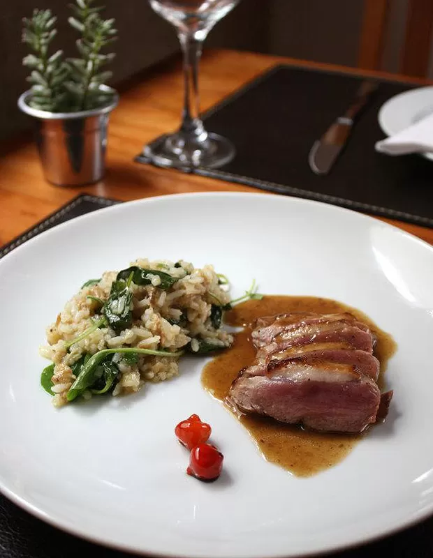

Saint-Michel
Uma harmonia refinada entre a tradição clássica francesa e a riqueza dos ingredientes brasileiros, proporcionando momentos memoráveis à mesa.

Sobre nós
O Saint-Michel é um restaurante elegante de inspiração franco-brasileira, conhecido por serviço impecável, ambiente sofisticado e uma cozinha autoral que valoriza ingredientes sazonais com técnicas clássicas de alta gastronomia. A proposta une tradição e contemporaneidade: receitas icônicas reinterpretadas, carta de vinhos curada e uma experiência pensada para celebrações e jantares memoráveis.
A casa nasce como um salon gourmand moderno: iluminação acolhedora, trilha discreta e mise en place refinado, convidando a uma refeição sem pressa e com atenção a cada detalhe do serviço. A cozinha privilegia produtos frescos e locais, aplicando bases francesas em harmonia com sabores do território brasileiro.
O nome evoca a herança clássica da gastronomia e o ritual de bem receber: hospitalidade calorosa, técnicas apuradas e respeito ao produto, pilares que sustentam a reputação de casas tradicionais de alta cozinha.

O Chef
Formado em cozinha clássica, o Chef Louis Clement-Lorran consolidou sua trajetória em casas de alta gastronomia, unindo técnica precisa, respeito ao ingrediente e uma leitura contemporânea da culinária de autor.
Depois de passagens por cozinhas de referência internacional e imersões sazonais com pequenos produtores locais, desenvolveu uma assinatura que privilegia produtos frescos, maturados no ponto e harmonias que valorizam textura, acidez e aroma em cada etapa da degustação.
No Saint-Michel, conduz uma cozinha de tempo e técnica, com inspirações francesas e ingredientes brasileiros, propondo menus que mudam com as estações e contam histórias à mesa, do amuse-bouche às sobremesas.